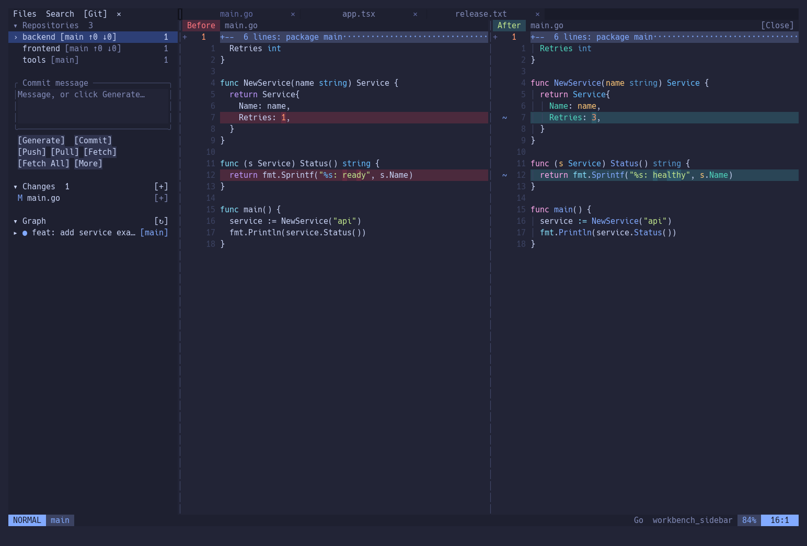

VimDesk
Konfigurasi Neovim untuk bekerja dengan beberapa repo Git. Termasuk sidebar Git, LazyGit, diff, dan search/replace.
Panduan ini untuk macOS. Membutuhkan Neovim 0.12+ dan Python 3.9+. Config dipasang sebagai profil vimdesk, terpisah dari ~/.config/nvim.
Panduan MarkdownInstall di macOS
Ikuti langkah berurutan. Jika suatu alat sudah terpasang, cek versinya lalu lanjutkan.
Memuat langkah instalasi…
Referensi resmi
Pengaturan tambahan
Language server (opsional)
Language server menyediakan completion, diagnostik, dan formatting. Jalankan dari folder sumber untuk memasang server Go, Rust, JS/TS/React, dan Python. Proyek tetap membutuhkan runtime dan dependensinya sendiri.
cd "$HOME/Developer/vimdesk"
./scripts/dependencies.sh languagesAI commit message (opsional)
Pasang dan login Codex CLI atau Claude Code mengikuti panduan resminya. Simpan file, stage perubahan, klik Generate di sidebar Git, pilih agent, lalu review pesannya sebelum Commit. Staged diff dikirim ke provider memakai akunmu; biaya penggunaan normal berlaku.
Pemakaian, update, dan backup
Tampilan
Lihat screenshot
Screenshot dari Neovim dengan repo latihan lokal.

Sidebar Git dan perbandingan Before / After.
Masalah umum
Config Neovim lama akan tertimpa?
Install default memakai profil vimdesk, terpisah dari ~/.config/nvim. Upgrade profil workbench membuat backup. Mengganti config default membutuhkan flag khusus di dokumentasi.
Perlu akun AI atau GitHub?
Download repo publik dan latihan lokal tidak membutuhkan login. AI opsional. Push ke proyek sungguhan membutuhkan remote, identitas commit, dan autentikasi Git. Repo latihan tidak memiliki remote.
brew atau vimdesk tidak ditemukan
Untuk brew, jalankan Next steps dari installer Homebrew. Untuk VimDesk, pakai ~/.local/bin/vimdesk atau ikuti langkah PATH. Buka ulang Terminal setelah mengubah konfigurasi shell.
Tidak bisa mengetik atau keluar dari Neovim
Tekan i untuk mengetik, lalu Esc untuk kembali ke Normal mode. Ketik :w lalu Enter untuk menyimpan, atau :qa lalu Enter untuk keluar. Space q q membuka konfirmasi jika ada perubahan belum tersimpan.
Dukungan Linux dan Windows
Panduan ini untuk macOS. Installer POSIX/Linux belum diuji menyeluruh. Windows belum didukung. Untuk Mac Intel atau macOS lama, cek dukungan Homebrew sebelum mulai.
Folder sudah ada saat git clone
Buka folder vimdesk yang sudah diunduh, simpan perubahan lokal, lalu jalankan git pull --ff-only dan ./install.sh. Jangan hapus folder yang berisi pekerjaanmu.